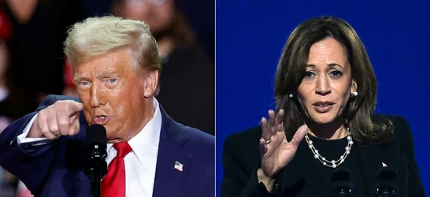

Breaking News: The dust has finally settled on an election night for the ages, and Donald Trump is back in the White House. Against a powerful bid from Vice President Kamala Harris, the former president has clinched victory, creating seismic waves not only in the United States but also across the globe. With a decisive 276 electoral votes, Trump has surged past the threshold to reclaim the Oval Office as America's 47th president. The news is already reverberating worldwide, evoking everything from elation to disbelief as citizens, leaders, and analysts process this unexpected twist.
For many outside U.S. borders, the result feels surreal—a sudden jolt, a deja-vu scenario that no one saw coming. “Are we going back in time?” one British columnist mused. Many Americans are equally astounded, with social media flooded by reactions ranging from shock to deep concern. The international community and even many within the United States are grappling with what this dramatic turn could mean for the future of America and its position on the world stage.
Trump’s return to the presidency has brought back memories of a rollercoaster era marked by fiery rhetoric, populist policies, and global controversy. Many Americans are asking: “Are we going back to that?” From trade wars to an “America First” approach that often put allies on edge, Trump’s first term redefined U.S. diplomacy and economic policy in ways the world had never quite seen before.
Beyond the borders of the United States, global leaders are likely recalculating their next moves. His victory stirs mixed emotions among those who witnessed the ups and downs of his previous term, from historic peace deals in the Middle East to heightened tensions with China and other major powers. Could his second term mean a resurgence of that bold, sometimes polarizing, diplomacy? Will there be a repeat of policy stances that once prompted even America's allies to question the relationship?
As results rolled in, many Americans took to social media, not to celebrate or mourn, but to express deep-seated concerns about the nation’s trajectory. Some, particularly younger voters and progressive activists, were quick to voice their worries, seeing Trump’s victory as a setback to social and environmental policies championed by the Biden administration. For them, the win felt like an uphill battle lost.
Others, however, were buoyed by his promises of strength, security, and a "prosperous America." At a celebratory rally in West Palm Beach, Trump energized a crowd of supporters with promises to "deliver the strong, safe America that our children deserve." His loyalists are hopeful, eager to see what he will accomplish in the next four years.
Still, the division is undeniable. Americans from coast to coast are openly questioning what lies ahead and whether this historic moment is a pathway to renewed greatness or a reminder of unresolved national conflicts.
Outside the United States, the reaction has ranged from quiet shock to open skepticism. World leaders from Western Europe to Asia are pondering how to navigate the complex, often unpredictable, waters of Trump's diplomacy. The European Union, which experienced tense negotiations during his first term, may brace for a new round of trade talks and policy disagreements. Meanwhile, analysts are speculating on what this shift might mean for issues like climate change, NATO’s future, and international alliances that had been carefully strengthened under the Biden-Harris administration.
In Canada and Mexico, the ripple effects are already being felt, with renewed concerns over cross-border policies, trade tariffs, and immigration reforms. Asian markets reacted with immediate fluctuations, hinting at the high stakes this presidency holds on a global economic scale.
As Americans await President Trump’s next steps, the atmosphere in the nation is one of tense anticipation. Can Trump unite a country that seems to grow more polarized with every election cycle? Will his return to the presidency spark new economic growth, job opportunities, and innovation, as his supporters believe? Or will it deepen the existing divides and create new challenges for a country still healing from past turmoil?
While his opponents struggle to make sense of this unexpected outcome, one thing is clear: the story of Trump’s America is far from over. His return to power is bound to inspire passionate debate, with both critics and advocates watching closely, wondering if this term will bring transformation, conflict, or perhaps even both.
America’s road forward is clouded with uncertainty, but one thing is certain—the world is watching, and history is in the making.